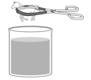

|
13. In optics, a transparent object can be
made invisible if placed in a liquid substance that has an identical index of
refraction. A student wishes to make a horse
figurine with an index of refraction of 1.59 disappear when dropped into a
beaker filled with a liquid substance.  To determine which liquid
substance will work best, she shines a light ray through each of the liquid
substances as illustrated in the ray diagram below. Ray Diagram She obtains the following data. Data Table
|
|||||||||
|
Which
liquid substance should she use to make the horse figurine disappear? Show all your work. To make the horse figurine disappear she
should use liquid substance .
|